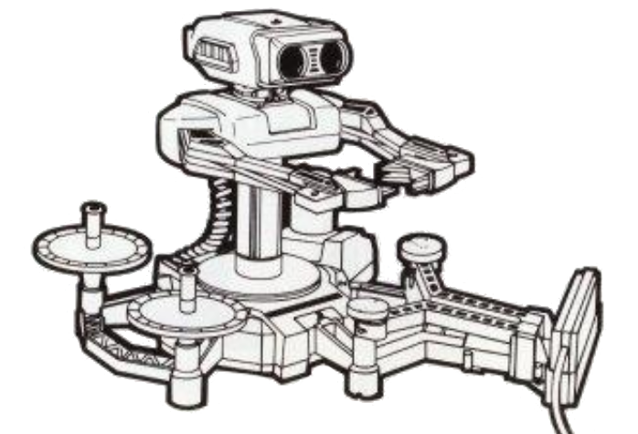
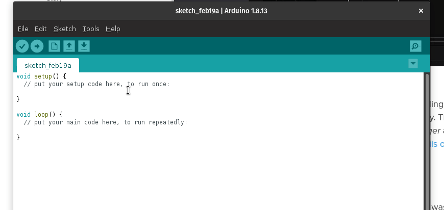

This library allows an Arduino board to control the Nintendo Robotic Operating Buddy (R.O.B.). The standard hardware configuration needed to control R.O.B. requires the placement of an LED in front of the left eye. This library can be used to generate pulses with the LED, resulting in full control of R.O.B.

The NesRob library simplies the interaction with the NES R.O.B., by handling the precision timing and command processing necessary to control R.O.B. The end user can simply choose an LED pin, then supply any of R.O.B.'s available actions to invoke the specified behavior in R.O.B. This library operates on top of the Arduino API, and therefore should be available to any Arduino compatible device.
Usage
You may simply download and install this library using the Arduino Library Manager:

The source code is relatively straight-forward. Here is an example that will blink R.O.B.'s LED:
{c++}
#include "NesRob.h"
NesRob rob(LED_BUILTIN);
void setup() {
// put your setup code here, to run once:
}
void loop() {
rob.sendCommand(NesRob::Command::LED_ENABLE);
::delay(1000); // wait for a second
rob.sendCommand(NesRob::Command::LED_DISABLE);
::delay(1000); // wait for a second
}
NOTE: This example is offered by the library as Blink.
Examples
- Blink: Validate your hardware configuration by flashing the LED on R.O.B.'s head.
- Stow: Put R.O.B. into the position required to fit in the original packaging.
- StowPseudoInterrupt: Use the LED as a pseudo-interrupt to put R.O.B. into the position required to fit in the original packaging.
- TestMotorArms: Test the left shoulder motor, which will cause R.O.B.'s arms to close and open.
- TestMotorShoulders: Test the right shoulder motor, which will cause R.O.B.'s shoulders to move down and up.
- TestMotorTorso: Test the base motor, which will cause R.O.B.'s torso to twist left and right.
API Documentation
The API documentation is generated using Doxygen and is hosted with GitHub pages.
Click here to view the API documentation page.
Research
The research for this project describes the protocol, as well as provides oscilloscope readings to describe the signal behavior captured in the library.
Click here to view the research page.
BluesRob Project
A project enabling R.O.B. to receive and respond to commands over the global cellular network!
Click here to view the project page.
Click here for the application source code, and an example of usage with native interrupts.
Running Tests
The tests are designed to be executed using Docker, and the environment required by the tests is defined in .github/actions/run-tests-in-container/Dockerfile. The following directions are provided to aid in executing the tests in a container.
- From the
nes-rob folder, build the container with the following command:
docker build .github/actions/run-tests-in-container/ --tag nes-rob-test
- Execute the tests inside the container using the following command:
docker run --rm --volume $(pwd):/nes-rob/ --workdir /nes-rob/ nes-rob-test
- Similar test results should print to your terminal for review.
==29== Memcheck, a memory error detector
==29== Copyright (C) 2002-2017, and GNU GPL'd, by Julian Seward et al.
==29== Using Valgrind-3.16.1 and LibVEX; rerun with -h for copyright info
==29== Command: ./nes_rob_tests
==29==
===============================================================================
All tests passed (98 assertions in 88 test cases)
==29==
==29== HEAP SUMMARY:
==29== in use at exit: 72,704 bytes in 1 blocks
==29== total heap usage: 18,118 allocs, 18,117 frees, 1,166,036 bytes allocated
==29==
==29== LEAK SUMMARY:
==29== definitely lost: 0 bytes in 0 blocks
==29== indirectly lost: 0 bytes in 0 blocks
==29== possibly lost: 0 bytes in 0 blocks
==29== still reachable: 72,704 bytes in 1 blocks
==29== suppressed: 0 bytes in 0 blocks
==29== Rerun with --leak-check=full to see details of leaked memory
==29==
==29== For lists of detected and suppressed errors, rerun with: -s
==29== ERROR SUMMARY: 0 errors from 0 contexts (suppressed: 0 from 0)
------------------------------------------------------------------------------
GCC Code Coverage Report
Directory: ../src
------------------------------------------------------------------------------
File Lines Exec Cover Missing
------------------------------------------------------------------------------
signal_generator.cpp 36 36 100%
pulse_driver.hpp 1 1 100%
led_ntsc_driver.cpp 34 34 100%
w_wave_driver.cpp 44 44 100%
------------------------------------------------------------------------------
TOTAL 115 115 100%
------------------------------------------------------------------------------
lines: 100.0% (115 out of 115)
branches: 100.0% (134 out of 134)
NOTE: If you are uncomfortable using Docker, then you may wish to use the Dockerfile as a guide to install the necessary dependencies and execute ./run_all_tests.sh locally.
Credits
This library builds the research done by x87bliss along with those on the Atari Age Forums, as well as Anne Barela's guide at Adafruit.